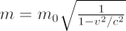

On Earth the terms mass and weight are often used interchangeably, but in astronomy and Newtonian physics the mass of an object is related to how much matter it contains. The mass of an object can be characterised by its ability to resist a given force (we sometimes call this a body’s inertial mass and thus mass is intimately associated with the concept of inertia). This is a simple consequence of Newton’s second law where the force F, on a body is equal to the mass m, times the acceleration a, it experiences, ie:
F=ma or m=F/a.
In deep space, away from the gravitational field of Earth (or another large body), an object will be “weightless” – however, it will still have mass, and thus a resistance to a given force.
Masses are often expressed in the units kilograms (kg), grams (g) or solar masses (M⊙). A body is more massive than another when it has a greater mass. One of the least massive objects in the Universe is the electron, which has a mass of just 9.11 × 10-31 kg whilst the Sun has a mass of 1.989 × 1030 kg, and galaxies like the Milky Way have masses in excess of 1042 kg.
Newton’s universal law of gravitation states that all masses in the Universe are attracted to each other.
In special relativity there is an equivalence between mass m, and energy E, given by the famous equation E= mc2 where c is the speed of light. Thus all particles and even light have a mass associated with them.
In Einstein’s special theory of relativity the mass of a body changes when it has a velocity v, with respect to an observer. If the rest mass is m0, then the mass m, of a body becomes:

where again c is the speed of light.
In Einstein’s General theory of Relativity, the presence of mass distorts the space-time continuum and makes it “curved”. In General Relativity, masses – and even light – move along straight lines in the curvature of space. Another consequence of mass in General Relativity is that it leads to time dilation or a gravitational redshift. This causes clocks in the presence of mass to appear to run more slowly than those in vacuo. The gravitational force a body feels in the presence of another mass is the gravitational mass, and in Einstein’s General theory of Relativity the gravitational and inertial masses are identical.